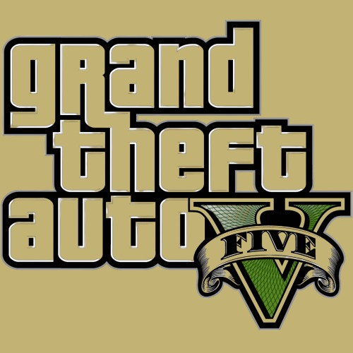

Overview
Grand Theft Auto V (GTA V) is an open-world action-adventure game developed by Rockstar North and published by Rockstar Games. Set in the fictional state of San Andreas, the game follows three protagonists: Michael De Santa, Franklin Clinton, and Trevor Philips. Players can switch between these characters to experience a complex, intertwined storyline full of crime, heists, and exploration.
Gameplay
Open-World Exploration
GTA V offers a vast, open-world environment that players can explore freely. The city of Los Santos and the surrounding countryside are filled with activities, side missions, and secrets to discover.
Character Switching
The unique character-switching feature allows players to seamlessly switch between Michael, Franklin, and Trevor, each with their own storylines, missions, and special abilities.
Heists and Missions
The game’s narrative is driven by elaborate heists and missions that require careful planning and execution. Players can customize their approach and choose their team members, impacting the outcome of each mission.
Graphics
Stunning Visuals
GTA V features stunning graphics with detailed environments, realistic character models, and dynamic lighting effects. The visual fidelity brings the world of San Andreas to life, creating an immersive experience.
Multiplayer
GTA Online
GTA V includes GTA Online, a multiplayer mode that allows players to create their own character and engage in a variety of activities, including missions, heists, races, and more. Regular updates introduce new content, keeping the experience fresh.
Community and Events
GTA Online has a vibrant community with frequent events, challenges, and seasonal updates that keep players engaged and foster a sense of community.
Community and Updates
Active Modding Community
GTA V has a strong modding community that creates custom content, enhancing and expanding the game. From new missions to graphical overhauls, mods add a new layer of enjoyment.
Regular Updates
Rockstar Games provides regular updates and new content for both the single-player and multiplayer modes, ensuring that the game remains engaging for years.
Reception
Critical Acclaim
GTA V has received widespread critical acclaim for its storytelling, gameplay mechanics, and open-world design. It is considered one of the greatest video games of all time.
Player Experience
Players appreciate GTA V for its rich narrative, diverse gameplay options, and the freedom to explore and interact with the game world. The blend of action, adventure, and simulation offers something for everyone.
Pros and Cons
- Expansive Open World: The detailed and immersive open-world environment offers endless exploration and activities.
- Engaging Storyline: The intertwining stories of the three protagonists provide depth and variety.
- Robust Multiplayer: GTA Online offers a wide range of activities and regular updates to keep players engaged.
- Performance Issues: Some players may experience performance issues on older hardware.
- Microtransactions: The inclusion of microtransactions in GTA Online can impact the gameplay experience for some players.
- Complex Controls: The game's controls can be complex and may take time for new players to master.
Conclusion
In conclusion, Grand Theft Auto V offers a rich, immersive gaming experience with its detailed open world, engaging narrative, and diverse gameplay options. Whether you enjoy single-player adventures or multiplayer chaos, GTA V has something for every type of gamer.